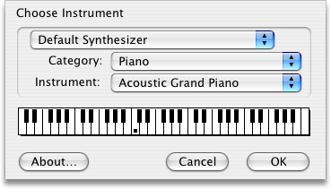

Page Index
QuickTime Musical Instruments
By default FretPet uses the built-in QuickTime Musical Instruments synthesizer to play tones. This is more for convenience than for the overall quality of the sound. The system-level name of this synthesizer (as shown in programs like GarageBand and SimpleSynth) is DLSMusicDevice. GarageBand can also use the QuickTime synthesizer, which is called
The Instrument Picker
The menu item presents you with the QuickTime Instrument Picker (shown below). This dialog allows you to select from any of QuickTime's sounds, including many "GS" sounds beyond the range of the GM standard. You can use any of these sounds in FretPet, but only the GM sounds are guaranteed to be compatible with other synthesizers.
|  |
In the Instrument Settings dialog you can click on the keyboard to hear the sound you've chosen. You can use the following modifier keys for a variety of effects:
- ⇧ Sustain (pedal)
- ⌃ Bend (with the mouse)
- ⌥ Louder
- ⌘ Louder
- ⌥⌘ Loudest
Beyond QuickTime™ Sound
Synthesizers are pretty inexpensive nowadays and most of them have MIDI support.
LIST OF GM SOUNDS
Piano
|
Reed
|
Chromatic Percussion
|
Pipe
|
Organ
|
Synth Lead
|
Guitar
|
Synth Pad
|
Bass
|
Synth Effect
|
Strings and Orchestra
|
Ethnic
|
Ensemble
|
Percussive
|
Brass
|
Sound Effects
|
GM Drum Kits
|